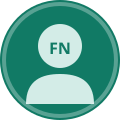

Vérifiez avant de contracter.
signw certifie les entreprises et prestataires sur preuves vérifiées, pour que chaque marché public ou privé soit attribué au bon acteur, au juste prix.
Réduire l’asymétrie d’information sur les marchés
En l’absence de tiers de confiance, l’acheteur ne peut pas distinguer la vraie qualité d’une entreprise. signw rétablit l'équilibre en transformant les déclarations en preuves auditées.
Sans signw : Le flou contractuel
- ⚠️ Sélection adverse (Akerlof) : Les prestataires sérieux sont pénalisés par les devis irréalistes d'entreprises fantômes.
- ⚠️ Déclarations sur l’honneur invérifiées : Engins lourds loués pour la journée ou matériel inexistant.
- ⚠️ Surcoûts et abandons de chantiers : Retards chroniques et incapacité financière à absorber le volume des travaux.
Avec signw : La confiance sur preuves
- 🎯 Signalement crédible (Spence) : Les entreprises compétentes émettent un signal officiel certifié (Badge + Score).
- 🎯 Audit humain & visites terrain : Vérification systématique des cartes grises, bilans certifiés ONECCA et PV de réception.
- 🎯 Test d’adéquation projet : Simulateur algorithmique vérifiant en 1 clic si l'agent est capable de réaliser un projet pour son budget.
Comment fonctionne la certification signw ?
Un processus transparent, rigoureux et indépendant garantissant le principe des 4 yeux.
1. Dépôt de dossier
L’agent renseigne le formulaire sectoriel et téléverse ses pièces administratives, bilans comptables et preuves de matériel.
2. Audit humain
L’équipe d’auditeurs signw examine chaque pièce, contrôle l'authenticité auprès des organismes émetteurs et programme une visite sur site.
3. Décision & Score
L'administrateur valide la décision finale (règle des 4 yeux). Le score de confiance (0-100) et le certificat officiel sécurisé sont publiés.
4. Attribution sereine
Le maître d’ouvrage simule l'adéquation projet/agent et contractualise en toute connaissance de cause avec le meilleur candidat.
Nos secteurs de certification
Un modèle extensible adapté aux spécificités techniques de chaque filière.
Prestataires certifiés à la une
Consultez les scores audités et les spécialités des entreprises qualifiées.
Simulateur d’Adéquation Projet ↔ Prestataire
Vous avez un budget et des exigences techniques ? Notre algorithme croise la capacité financière, le parc matériel vérifié et l'expérience réelle des agents pour vous livrer une synthèse immédiate.
Faire un test rapide
Ils font confiance à signw
Des acteurs publics et privés engagés pour la transparence contractuelle.

« Sur nos marchés de voirie municipale, signw nous a permis d'éliminer immédiatement les dossiers à fausses attestations. Les entreprises retenues disposaient bien du matériel vérifié sur place. »
« Obtenir le certificat Niveau Or a été un formidable accélérateur. Nos bilans et notre parc d'engins sont reconnus sans contestation possible lors des dépouillements d'offres. »
« Le module d’adéquation projet est d’une efficacité redoutable : il croise le ratio de charge et l’expérience similaire en quelques secondes. Un vrai tiers de confiance régalien. »
Questions fréquentes sur signw
SGW-AAAA-NNNNN et un QR code officiel. Toute personne peut saisir ce code sur la page "Vérifier certificat" pour consulter instantanément le statut actif, suspendu ou expiré du document.
Prêt à sécuriser vos marchés ?
Rejoignez la première communauté d'acteurs économiques certifiés sur preuves au Cameroun.